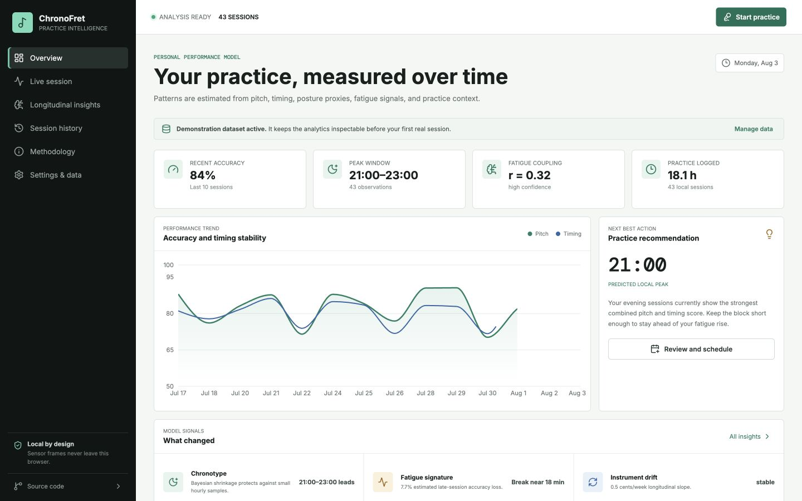

Bayesian-shrinkage hourly windows
Identifies peak combined pitch + timing hours (e.g., 21:00–23:00 in demo dataset) while protecting against sparse hourly samples.
MULTIMODAL AI PRODUCT
01 / LIVE
ChronoFret
Local-first longitudinal guitar performance coach combining Web Audio YIN pitch detection, MediaPipe hand and face landmarks, ambient luminance, and idle-break tracking into four personal time-series models stored exclusively in browser IndexedDB.
- TypeScript
- React
- Web Audio / YIN
- MediaPipe
- IndexedDB
- ICS Export
- Models
- Chronotype · Decay · Fatigue · Drift
- Verification
- 17 Vitest suites + live deployment